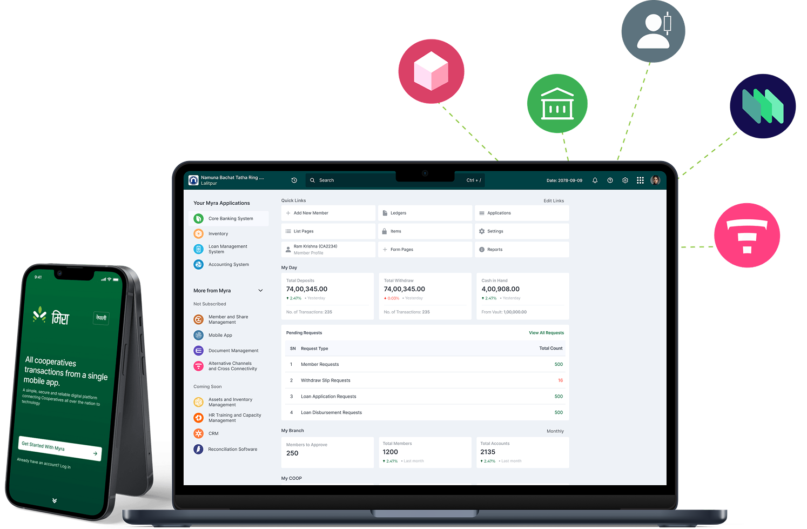
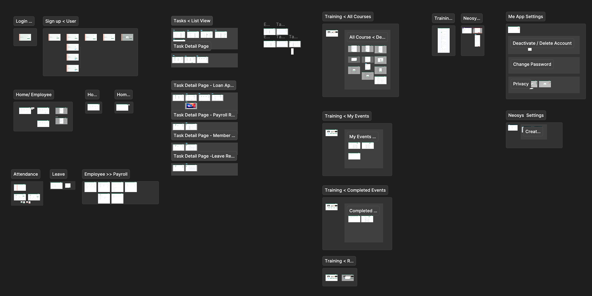
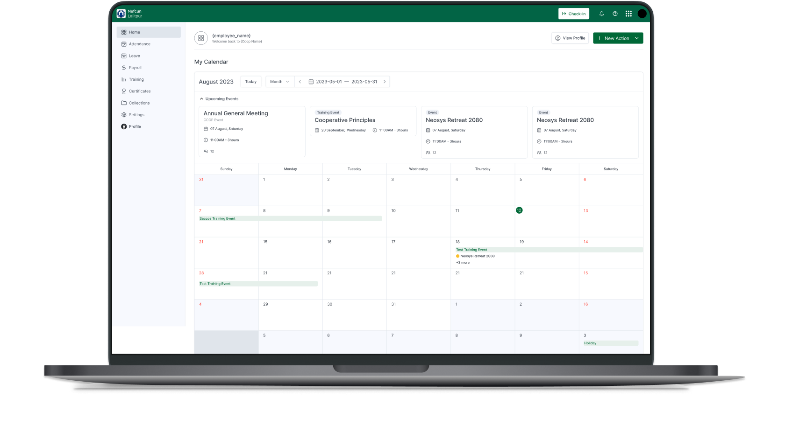

DIGITIZING
NEPAL'S
COOPERATIVES.
Designed three interconnected modules HRM, FAM, and the Myra Me employee app for a cloud-based ERP platform serving savings and credit cooperatives across Nepal. A team of 18, four months, and a product that replaced paper-based processes for an entire sector.

TECHNOLOGY FOR
NEPAL'S
COOPERATIVES.
Myra is a cloud-based, modular ERP platform designed specifically to address the technological needs of savings and credit cooperatives and related organizations across Nepal fully digitalizing cooperative processes to improve transparency, efficiency, and user experience.
I was brought in to design three new subscription-based modules introduced after the initial core system was in place: the HRM module (employee management), the FAM module (financial assets), and the Myra Me App (employee self-service mobile app).
MANUAL PROCESSES
AT SCALE
DON'T WORK.
As Myra ERP expanded beyond its legacy core modules, savings and credit cooperatives faced increasing operational complexity manual HR and finance processes led to data inaccuracies, delayed reporting, and fragmented employee experiences.
Core challenge: There was no unified platform for employees to access day-to-day essentials attendance, payslips, leave requests, training records. Existing workflows couldn't scale with organizational growth across Nepal's cooperative sector.
THREE MODULES.
ONE PLATFORM.
Each module addressed a distinct operational gap for cooperatives. Together, they created a unified digital ecosystem that replaced fragmented, manual processes across HR, finance, and employee self-service.
HRM Human Resource Management
Centralized employee record management, leave tracking, payroll processing, and training management designed for HR managers across cooperative branches.
FAM Financial Assets Management
Tracks finances and fixed assets accurately, automates reporting, and ensures audit readiness for cooperative finance teams managing complex ledgers.
Myra Me App Employee Self-Service
An intuitive mobile app empowering cooperative employees with quick, secure access to attendance, payroll, training records, certificates, and collections all from a single interface.
UNDERSTANDING
COOPERATIVE
WORKFLOWS
This was domain-heavy design work. Nepal's cooperative sector has specific regulatory requirements, diverse user literacy levels, and operational workflows unlike typical enterprise software. Research had to be grounded in the real environment.
Rapid prototyping with NEFSCUN
The design process involved rapid prototyping and regular feedback sessions with NEFSCUN advisors and end users. Their domain knowledge was essential for understanding cooperative-specific HR and financial workflows.
Direct user consultations
Direct consultations with cooperative staff HR managers and regular employees provided ground-level insights into daily routines and operational bottlenecks. Pain points were mapped directly from real users, not assumed.
Iterative feedback with Neosys
Neosys's involvement facilitated effective usability testing and iterative improvements. Weekly syncs with the team ensured smooth collaboration, timely updates, and alignment throughout the 4-month process.
TARGETED GOAL
The goal was to create a user-friendly HRM module to centralize and streamline employee record management, leave, payroll, and training. A robust FAM module to track finances and assets accurately, automate reporting, and ensure audit readiness. An intuitive employee app Myra Me to empower employees with quick, secure access to attendance, payroll, training, certificates, and collections, all from a single interface.
The ERP market is highly competitive while many local competitors focus on niche or simpler solutions, they often lack the comprehensive integration that Myra ERP offers: a fully integrated, modular platform that balances broad functionality with genuine usability.
FOUR PROBLEMS.
THREE MODULES
TO SOLVE THEM.
Data Inaccuracy & Reporting Delays
Implemented HRM and FAM that ensured accurate, real-time data entry and automated reporting eliminating manual transcription errors.
Limited Employee Access & Engagement
Created the Myra Me app that enabled employee self-service access so staff could check payslips, apply for leave, and access training without going through HR.
Fragmented & Manual Processes
The HRM and FAM modules automate workflows and unify data replacing paper forms, spreadsheets, and disconnected systems with a single source of truth.
Weak Governance & Regulatory Compliance
Implemented FAM that digitizes assets and finances for compliance with audit-ready reporting and transparency dashboards for cooperative boards.
BRIEFS BEFORE
WIREFRAMES.
A DIFFERENT
APPROACH
Rather than creating traditional wireframes, my process began with drafting detailed briefs outlining the key elements and data fields for each form, the content and functionality of detailed pages, and the key metrics or summaries to be displayed on the dashboard and main overview screens.
These briefs served as a foundational blueprint, ensuring alignment with stakeholders before moving forward. Once the briefs were approved, I proceeded directly to high-fidelity designs leveraging an already established design system that streamlined this phase, maintaining consistency and efficiency without starting from scratch.
Why this worked: With an 18-person team and a 4-month deadline, the brief-first approach accelerated stakeholder alignment and eliminated rework. A rapid transition from concept to pixel-perfect UI while ensuring all design components adhered to established standards.
Key screens designed across the HRM, FAM, and Myra Me App flows:

BEFORE &
AFTER
HR processes lived in spreadsheets and paper forms
Leave applications were submitted in writing, payroll was calculated manually in Excel, and training records existed only in physical files causing delays, errors, and no audit trail.
Unified HRM module with automated workflows
Leave applications, approvals, payroll processing, and training records all in one system with role-based access, automated notifications, and a full audit trail for every action.
Employees needed to go through HR for everything
Checking a payslip meant asking HR. Verifying leave balance meant calling the branch office. Employees had no self-service access to their own records.
Myra Me App self-service in their pocket
Every employee can check attendance, download payslips, apply for leave, access training certificates, and view their collection summary directly from the mobile app, anytime.
Financial asset tracking was entirely manual
Fixed assets were tracked in registers, depreciation was calculated on spreadsheets, and compliance reports required days of manual compilation before every audit.
FAM module real-time financial intelligence
Automated depreciation, real-time asset dashboards, and one-click compliance reports. Audit preparation reduced from days to hours. Full visibility for cooperative boards at any time.
Brief-first was unconventional for the team
The team expected traditional lo-fi wireframes as a first deliverable. Starting with detailed content briefs instead risked misalignment on process.
Briefs accelerated alignment by 2 weeks
By documenting every data field, metric, and workflow decision in writing first, stakeholder reviews became more focused and actionable eliminating a full round of wireframe revisions.
THE FINAL
ITERATION
Validated through walkthrough sessions with product managers, developers, and the Neosys team. Weekly syncs with the Neosys team and customers gathered focused feedback rework was handled professionally without compromising design quality.

THE RESULTS
After introducing the FAM, HRM, and Myra Me app modules, users experienced a streamlined, unified digital platform that replaced manual, fragmented processes improving efficiency, transparency, and satisfaction across cooperatives.
WHAT I LEARNED
Cross-functional collaboration at scale
Stakeholders from different teams NEFSCUN advisors, Neosys developers, cooperative HR managers contributed to iterative feedback loops, helping prioritize features and make well-informed decisions rapidly. A shared design system further bridged communication between designers and developers, reducing friction during handoffs.
Impact on user experience
HRM simplified employee management tasks, FAM provided real-time financial and asset insights improving compliance and reporting, and the Myra Me app empowered employees with service for leave, payslips, training access and more. This led to higher efficiency, transparency, engagement, and overall satisfaction across cooperatives.
Designing for domain-specific users
Nepal's cooperative sector has unique regulatory requirements, mixed digital literacy, and workflows that don't map to typical enterprise UX patterns. This project taught me how deeply you need to understand a domain before designing for it and why direct user consultation with HR managers and branch staff was non-negotiable.
Brief-first is a process superpower
Leading with detailed content briefs instead of lo-fi wireframes proved faster and more effective for a team of 18. By aligning on data fields, metrics, and workflows in writing first, I eliminated an entire round of revisions and accelerated the overall delivery timeline significantly.
LIKE WHAT
YOU SEE?
Let's talk about what we can build together.